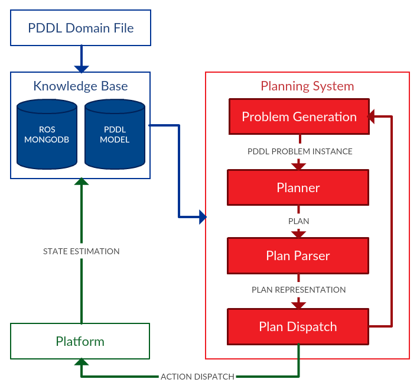

This page is under construction. The documentation is being updated to the newest version of ROSPlan and there may be some differences in the information presented below.
ROSPlan Overview
The ROSPlan framework provides a generic method for task planning in a ROS system. ROSPlan encapsulates both planning and dispatch. ROSPlan has a modular design, intended to be modified.
The Knowledge Base is used to store a PDDL model.
The Planning System is used to interface with a planner. It contains three modules: problem generation, planning, and plan dispatch. Any of these can be replaced.
Knowledge Base

The Knowledge Base stores the PDDL model. It stores both a domain model and the current problem instance. Unless it is modified, the Knowledge Base:
- Loads a PDDL domain from file.
- Stores the state as a PDDL instance.
- Is updated by ROS messages.
- Can be queried.
Most of the time there will also be information to store that is not a part of the PDDL model. For this purpose we use ROS mongoDB by default.
Planning System

The planning system integrates with the planner. Unless it is modified, the planning system will:
- Fetch information from the knowledge base and generate a PDDL problem file.
- Call a planner and process the output plan.
- Dispatches the plan via ROS messages.
The planning system can handle replanning attempts upon planning or action failure, or plan invalidation. The number of replanning attempts, and a number of other parameters can be altered without replacing any modules of the planning system.